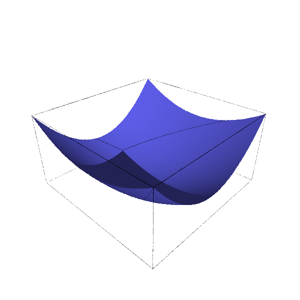

Définition fonctionnelle explicite
sage: var('u, v')
sage: h = lambda u,v: u^2 + 2*v^2
sage: plot3d(h, (u,-1,1), (v,-1,1))
Cette notation généralise celle rencontrée pour une variable.
Remarque : les deux variables ne doivent pas être encadrées par des parenthèses !
Remarque : les deux variables ne doivent pas être encadrées par des parenthèses !

sage: var('u, v')
sage: h = lambda u,v: u^2 + 2*v^2
sage: h(2,1)
6
La distinction entre les deux variables est parfaite.
Définition fonctionnelle abrégée
sage: var('u, v')
sage: h(u,v) = u^2 - v^2
sage: plot3d(h, (u,-1,1), (v,-1,1))
Lorsque la fonction ne comporte pas de paramètres, ce mode de définition ne présente aucun danger. C'est certainement ce qui s'approche le plus des notations mathématiques standards.

Définition par une expression
sage: var('u, v')
sage: f1=(4+(3+cos(v))*sin(u),
4+(3+cos(v))*cos(u), 4+sin(v))
sage: f2=(8+(3+cos(v))*cos(u),
3+sin(v), 4+(3+cos(v))*sin(u))
sage: p1=parametric_plot3d(f1,(u,0,2*pi),(v,0,2*pi),
color="red", opacity=0.5, aspect_ratio=[1,1,1])
sage: p2=parametric_plot3d(f2,(u,0,2*pi),(v,0,2*pi),
color="blue", opacity=0.5)
sage: p1+p2
Parfois, l'absence de paramètre permet l'utilisation de cette notation pour les tracés de surfaces, à condition de préciser la variable affectée à chaque intervalle.

sage: var('u, v')
sage: f1=(4+(3+cos(v))*sin(u),
4+(3+cos(v))*cos(u),4+sin(v))
sage: f1(0,0)
Traceback (most recent call last):
File "<stdin>", line 1, in <module>
File "/home/phil/.sage/sage_notebook/worksheets/admin/30/code/36.py", line 8, in <module>
exec compile(ur'f1(Integer(0),Integer(0))' + '\n', '', 'single')
File "/donnees/SAGE-MATH/sage-3.1.1-debian32-intel-i686-Linux/local/lib/python2.5/site-packages/sympy/thirdparty/pyglet/", line 1, in <module>
TypeError: 'tuple' object is not callable
Mais il devient impossible de distinguer une variable d'une autre et, à cause de cette ambiguïté, certains calculs simples sont interdits.